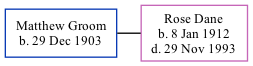

Matthew D Groom 1903 -
[ Home ] | [ Calendar ] | [ Surnames Index ] | [ Family History ]Matthew Groom, the husband of Rose Victoria Dane (the second cousin twice-removed on the mother's side of Nigel Horne), was born on Dec 29, 1903. He married Rose in Faversham, Kent, England around Aug 19361.
Citations
- England & Wales Marriages 1837-2005 - Findmypast
Media
England & Wales marriages 1837-2005 Transcription - BMD-M-1936-3-AZ-000382-034
1939 Register Transcription - TNA-R39-1716-1716H-024-20
England & Wales marriages 1837-2005 - BMD/M/1936/3/AZ/000648/058
Family Tree
Generated by ged2site. Last updated on Nov 13, 2024